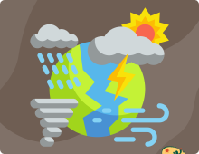

A inovação constitui a essência primordial do nosso
empreendimento, representando o ponto inaugural
que impulsionou a iniciativa e a criação do nosso
centro. Dessa maneira, dedicamo-nos à elaboração e
desenvolvimento de conceitos inovadores, projetos de
vanguarda e soluções tecnológicas destinadas ao
setor agrícola.
empreendimento, representando o ponto inaugural
que impulsionou a iniciativa e a criação do nosso
centro. Dessa maneira, dedicamo-nos à elaboração e
desenvolvimento de conceitos inovadores, projetos de
vanguarda e soluções tecnológicas destinadas ao
setor agrícola.
Nossos Produtos
Os produtores poderão estimar
o valor do animal e de sua carne
com base nos gastos
(em desenvolvimento).
o valor do animal e de sua carne
com base nos gastos
(em desenvolvimento).
Os produtores poderão vender
seus produtos e serviços
através de uma plataforma
simples e de fácil acesso (em desenvolvimento).
seus produtos e serviços
através de uma plataforma
simples e de fácil acesso (em desenvolvimento).

Realizamos a medição de
dados meteorológicos para
informarmos os produtores
sobre o clima da região (em desenvolvimento).
dados meteorológicos para
informarmos os produtores
sobre o clima da região (em desenvolvimento).
O CIDTS, resultado da parceria entre o IFCE e o
Ministério da Integração e do Desenvolvimento
Regional, atua nos eixos estratégicos das rotas do
leite, mel, cordeiro e fruticultura. Oferecemos
extensão tecnológica, capacitação, suporte aos
produtores e promovemos um ambiente dinâmico
para negócios e startups.
Ministério da Integração e do Desenvolvimento
Regional, atua nos eixos estratégicos das rotas do
leite, mel, cordeiro e fruticultura. Oferecemos
extensão tecnológica, capacitação, suporte aos
produtores e promovemos um ambiente dinâmico
para negócios e startups.
Nossos Serviços

Contempla produtores
rurais que tem o leite como
atividade de subsistência e com
profissionalização da produção.
rurais que tem o leite como
atividade de subsistência e com
profissionalização da produção.

Visa o desenvolvimento
através de arranjos produtivos
locais associados à apicultura,
meliponicultura e produtos
das abelhas.
através de arranjos produtivos
locais associados à apicultura,
meliponicultura e produtos
das abelhas.

Ramo da agricultura que visa
produzir frutos em geral com o
intuito de comercializar os
mesmos.
produzir frutos em geral com o
intuito de comercializar os
mesmos.

Promove o desenvolvimento
territorial e regional por meio do
fortalecimento à ovinocultura e
à caprinocultura.
territorial e regional por meio do
fortalecimento à ovinocultura e
à caprinocultura.

Apoia a estruturação de
uma rede de polos de TICs
para o desenvolvimento e
estruturação de smartcities.
uma rede de polos de TICs
para o desenvolvimento e
estruturação de smartcities.

Criar alternativas sustentáveis
promovendo a inclusão e o
desenvolvimento regional a
partir do seu aproveitamento
econômico de resíduos.
promovendo a inclusão e o
desenvolvimento regional a
partir do seu aproveitamento
econômico de resíduos.